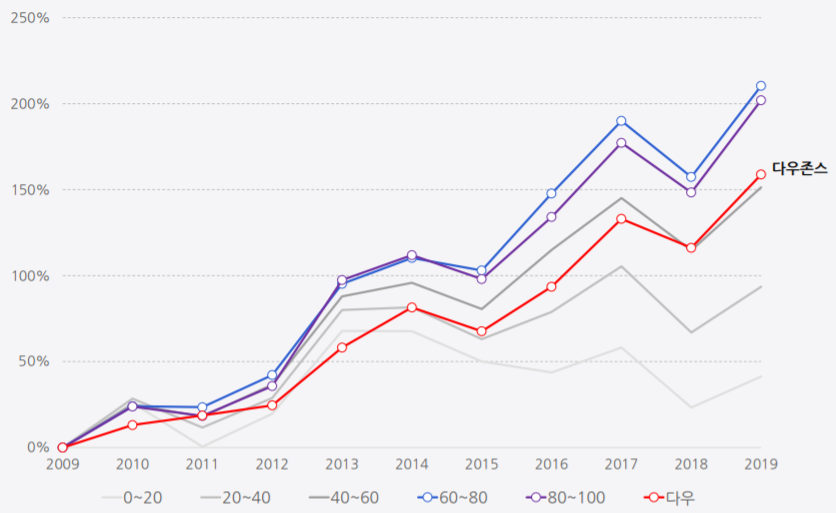

매일 밤, 투자의 즐거움을 경험하세요
월가히어로
5,000여개 미국 주식 중 저평가 우령자만 쏙쏙 골라 집중 분석하고 추천합니다. 전 상장사의 재무정보와 주가, 투자지표, 밸류에이션 지표 등 빅 데이터에서 엄선한 최고의 주식을 최적의 타이밍에 발굴할 수 있습니다.
-
A퀀트 방식으로 분석한 5가지 기업분석 항목을 거미줄 모양의 스파이더(Spider) 차트에 보여줍니다.
자세히 보기
10년 이상의 재무 데이터와 통계적 분석방법을 활용해 기업의 성장성, 안전성, 독점력, 배당매력을 평가합니다. 또한, 검증된 알고리즘에 따라 적정주가 계산하고 현재 주가를 저평가, 적정가, 고평가로 구분해 알려 드립니다.
거미가 거미줄을 이용해 먹잇감을 포착하는 것처럼, 스파이더 차트는 최고의 투자매력을 가진 기업을 누구나 쉽게 찾고 투자하는데 도움을 드립니다. -
A스파이더 종합점수는 기업의 10년 이상의 재무 데이터와 통계적 분석 방법을 반영한 알고리즘에 따라 계산합니다. 기업을 수익 성장성, 재무 안전성, 사업 독점력, 배당매력, 밸류에이션 등 5개 기준에 따라 각 항목별로 자세히 분석합니다.
종합 점수가 높을수록 투자매력이 높은 기업입니다. 스파이더 점수 상위 그룹의 수익률은 하위 그룹에 비해 월등한 성과를 기록했습니다. 과거 10년간(2009년~2019년) 종합점수 상위그룹은 연평균 11.9%, 누적 수익률 210%를 기록했습니다. 반면, 하위그룹은 연평균 3.52%, 누적 수익률 41%를 나타내, 상위 그룹이 하위 그룹 대비 5배 높은 성과를 나타냈습니다.스파이더 종합점수 그룹별 수익률 현황
스파이더 점수 10년 연평균 수익률 누적 수익률 80~100 11.69% 202% 60~80 11.99% 210% 40~60 9.65% 151% 20~40 6.83% 94% 0~20 3.52% 41% 다우존스 지수 9.98% 159% (기간 : 2009년 ~ 2019년)
다우존스 지수 VS 스파이더 점수 그룹별 수익률 추이
(기간 : 2014년 ~ 2019년)
자세히 보기 -
Q투자매력 종합 점수와 스파이더 차트를 투자에 활용하려면?
A 1) 종합 점수를 활용한 투자전략
자세히 보기
스파이더 종합점수는 기업의 수익 성장성, 재무 안전성, 사업 독점력, 배당매력, 밸류에이션 등 5개 항목에 대해 각 항목별 평가 점수를 합산해 제공합니다.
2) 개별 분석 항목 점수를 활용한 투자전략
① 배당 매력주를 찾는 법
배당 매력에 대한 평가는 과거의 배당지급 이력은 물론, 현재와 미래의 배당 지급 여력이 있는지 등을 종합적으로 분석합니다. 별점 5점은 미국 주식 5,000여개 중 상위 2.5%인 127개 기업만이 받았습니다.
② 독점력을 갖춘 스노우볼 종목을 찾는 법
스노우볼(snowball) 종목은 투자자가 장기 보유할 기업을 찾는 데 매우 유용합니다. 작은 눈덩이가 구르면서 점점 큰 눈덩이로 변하듯이, 스노우볼 종목은 매년 기업가치가 복리로 성장하는 기업을 말합니다. -
A재무차트는 초보 투자자들이 재무제표를 쉽게 이해할 수 있도록 시계열 차트로 만든 것입니다. 재무차트를 이용하면 재무상태표, 손익계산서,현금흐름표의 주요 항목을 쉽게 분석할 수 있습니다.
자세히 보기 -
A종목추천은 종목발굴 → 분석/진단 → 목표가 산정 → 추천 단계로 진행됩니다.
자세히 보기
종목발굴은 스파이더 알고리즘에 따라 우량주를 발굴합니다. 과거 10년 이상의 기업의 재무, 사업 데이터를 분석해 사업 경쟁력과 재무 안전성이 검증된 기업을 선정합니다. -
A목표가는 적정주가를 구하는 밸류에이션 알고리즘에 따라 계산합니다. 주가수익배수(PER), EV/EBITDA, 주가순자산배수(PBR), RIM(잔여이익모델) 등의 밸류에이션 모델에 따라 목표가를 계산합니다.
자세히 보기
데이터히어로에서 제공하는 정보는 신뢰할 만한 자료로 부터 얻어진 것이나
그 정확성에 대해 보증하지 않습니다. 따라서 본 정보를 이용한 투자에 대한 모
든 투자판단은 투자자 본인의 책임으로 데이터히어로는 그 결과에 대해 법적인
일체의 책임을 지지 않습니다.
모든 콘텐츠의 저작권은 데이터히어로에 있으며 사전 허가없이 이를 무단으로
사용하거나, 데이터베이스화 할 경우 민형사상 책임을 물을 수 있습니다.
data from Quandl and Sharadar